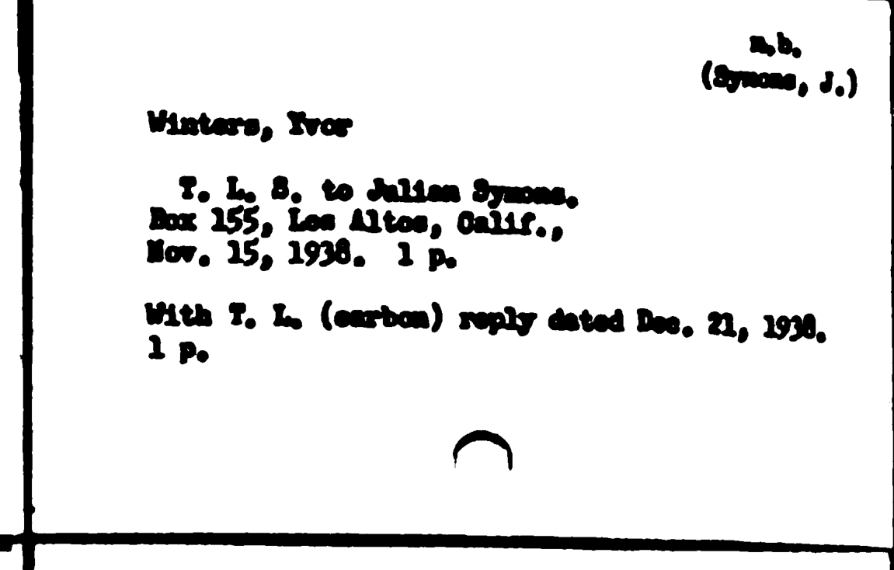

v4-p0431-r0c2
unverified
n.b.
(Symons, J.)
(Symons, J.)
Winters, Yvor
T. L. S. to Julian Symons.
Box 155, Los Altos, Calif.,
. 1 p.
Box 155, Los Altos, Calif.,
. 1 p.
With T. L. (carbon) reply dated .
1 p.
1 p.
Ctrl/⌘+Enter to save

source scan
Structured description
- Repository
- New York Public Library · Henry W. and Albert A. Berg Collection
- Contents
- Winters, Yvor Typed letter signed to Julian Symons Written from Box 155, Los Altos, California.
- Typed letter (carbon), reply Accompanies the letter above.
- Physical
- 2 items, 1 p. each